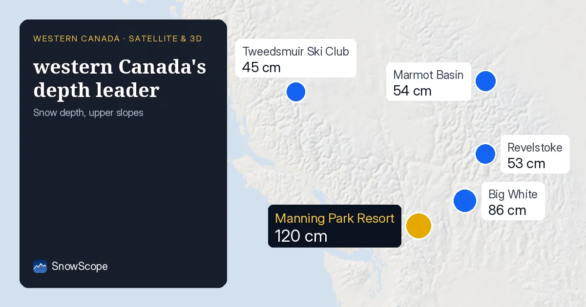
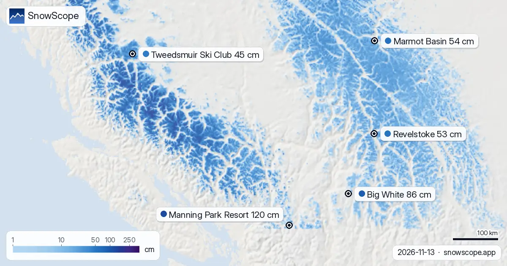

120 cm at Manning Park Resort: western Canada's depth leader
120 cm at Manning Park Resort puts it 34 cm ahead of Big White in western Canada. When satellites last saw clear skies in early November, they confirmed snow cover across every resort in this analysis; our model's depth estimates today align with those observations.
See the live snow forecast for Manning Park Resort in the SnowScope appSnow depth, powder alerts and the 3D map, free.
Manning Park's unexpected lead
Manning Park Resort tops western Canada with 120 cm depth at upper slopes—a substantial 34 cm margin over Big White at 86 cm. What makes this lead surprising is elevation: Manning Park's summit sits at only 1,789 m, while Big White reaches 2,271 m. In typical mountain snow patterns, higher elevation means deeper snow; Manning Park breaks this rule. Local wind or orographic effects have likely favoured its slopes.
The rest of the ranking is clear: Big White at 86 cm, Marmot Basin and Revelstoke both near 53–54 cm, and Tweedsmuir at 45 cm. These are model estimates for November 13, based on our analysis of snow data and weather patterns from recent days.
| Resort | Snow depth | New snow, 72 h | Coming, next days | Top |
|---|---|---|---|---|
| Manning Park Resort | 120 cm | 0 cm | 10 cm | 1,789 m |
| Big White | 86 cm | 0 cm | 16 cm | 2,271 m |
| Marmot Basin | 54 cm | 1 cm | 3 cm | 2,504 m |
| Revelstoke | 53 cm | 4 cm | 21 cm | 2,224 m |
| Tweedsmuir Ski Club | 45 cm | 27 cm | 4 cm | 1,650 m |

What satellites saw when clouds cleared
To test whether these depths are realistic, we turn to satellite observations. On November 4, when clouds broke, satellites saw snow covering Manning Park, Big White, Marmot Basin, and Revelstoke. Tweedsmuir Ski Club appeared on a fresh satellite pass on November 10, also snow-covered. These are direct observations from space, not estimates.
They confirm one crucial fact: snow is actually there at all five resorts. That satellite evidence is vital for validating our model.

Model and satellite data in agreement
Our depth estimates align with the satellite observations. Satellites confirmed snow was present across the region in early November; our model now estimates how much. Manning Park's lead is not an artefact of the model—the model is capturing real differences in snowfall and elevation between these sites. The gradient from 120 cm down to 45 cm is plausible for early November.
The key limitation: cloud has covered the region since November 4 and 10, so we cannot see the current state from space. Our depth estimates today are based on the model, not fresh satellite data. That satellite validation from early November gives us confidence to forecast forward.
Revelstoke and Big White gain ground in the forecast
The model forecasts substantial snow for November 14 to 16, and rankings will shift. Revelstoke is expected to receive 21 cm, the most in the region. Big White will see 16 cm, Marmot Basin 3 cm, and Tweedsmuir 4 cm. Manning Park, despite its current lead, is forecast only 10 cm—not enough to maintain its 34 cm margin.
By November 16, the depth rankings will likely change, with Revelstoke possibly moving into contention for the lead. Cloud cover will make satellite confirmation of these changes difficult; we will rely on the model and ground reports for the next week.
Regional picture: 31 of 57 resorts active
Zoom out from these five resorts. As of November 13, snow covers 201,390 km² of western Canada, with snow present at 31 of 57 resorts. That is down from November 11, when 35 resorts reported snow and coverage reached 215,390 km². However, the forecast expects recovery to around 210,000 km² and 35 active resorts by November 16 as fresh snow arrives.
This is the classic early-November pattern: uneven coverage, modest depths, and advantage favouring elevation gain.
Tips for skiers
- Manning Park has the region's best current depth at 120 cm, but early-season snow is thin off main slopes—stick to groomed upper terrain.
- Revelstoke is forecast 21 cm by November 16, which could rival Manning Park; watch the forecast closely if you plan to ski there.
- Big White sits second at 86 cm with 16 cm forecast; it will gain ground but likely stay behind Manning Park and Revelstoke.
- Early-season snowpack is thin across western Canada. Consult your area's official avalanche bulletin before skiing off-piste.
- Satellite observations confirmed snow is present at all major resorts, but depths carry early-November uncertainty; the forecast is your best guide for the next week.
About these numbers
Resort snow depths are the deepest snow on the resort's upper slopes from the SnowScope snow model (about 1 km, run of 13 November); they are estimates for an area, not a measurement at one point. Station values are measurements on the date shown. Forecasts can change. Always read the official avalanche bulletin before going off-piste.
Official avalanche bulletins: Avalanche Canada
Cite this report
For research, teaching or the press: the numbers and charts are free to reuse under CC BY 4.0 with this citation.
SnowScope (2026), 120 cm at Manning Park Resort: western Canada's depth leader, https://snowscope.app/blog/en/2026/11/western-canada-satellite-snow-view-13-november-2026.html, accessed 2026-11-13
SnowScope (Atlas Labs). (2026, November 13). 120 cm at Manning Park Resort: western Canada's depth leader. SnowScope snow reports. https://snowscope.app/blog/en/2026/11/western-canada-satellite-snow-view-13-november-2026.html
BibTeX
@misc{snowscope2026westerncanadasatellitesn,
author = {{SnowScope (Atlas Labs)}},
title = {120 cm at Manning Park Resort: western Canada's depth leader},
year = {2026},
month = nov,
howpublished = {\url{https://snowscope.app/blog/en/2026/11/western-canada-satellite-snow-view-13-november-2026.html}},
note = {Published 2026-11-13 19:19 UTC; accessed 2026-11-13}
}· CC BY 4.0 · Methods, data and tools →
Manning Park Resort: snow and temperature by height, this winter vs last (tools) →
Follow Manning Park Resort
Free: a message when fresh snow is coming, and the forecast every morning.
More snow reports

Ski Callaghan leads Western Canada forecast with 48 cm new snow through 7 November, mostly on 6th, with higher elevations capturing deeper accumulation.

Banff Sunshine Village month by month: about 100 cm at mid-mountain in a usual March over 46 past winters, April deepest near the top, and a season into late May.

We compared the snow on 10 November with each winter's deepest snow at 46 ski resorts over 46 winters. A snowy start helps, but less than many skiers think.